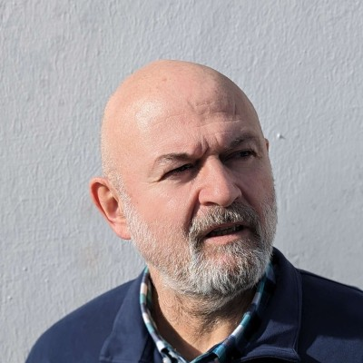
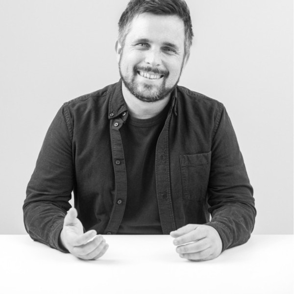
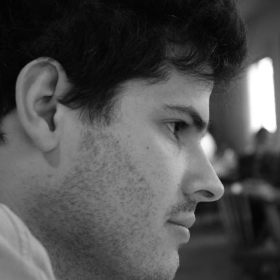
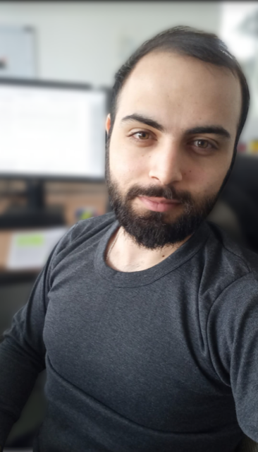

Program
Pers3S workshop spans a full day from 9am to 17h30, with a total of 3 sessions:
9h-12h30 Cloud and Storage

9h00 Plenary Session
Overview of the Storage landscape: Trends, Evolution and Key Developments
Philippe Nicolas, Coldago Resarch, StorageNewsletter &The French Storage Podcast
The French Storage Podcast, also known as TFSP, is a podcast that focuses on data, data management, and storage. It's an international podcast hosted by Philippe Nicolas, an industry observer with over 30 years of experience. During the last decade and even more, under the pressure of new workloads and IT challenges, we all saw several developments in the data storage industry at various levels, hardware, media, networking, processors, software and even architecture with also new players. This talk selects some key examples in the recent storage timeline to illustrate this evolution and forces behind.
Slides of the presentation.


9h30 Plenary Session
Designing & operating a large-scale S3 object- storage infrastructure at OVHcloud
Antonin Goude, Romain de Joux, OVH Cloud
Knowing hardware disks evolution and performance limitation, discover how we tackle this industrial challenge to deliver a state-of-the-art managed and ultra-scalable S3 infrastructure. [to be detailed further]
10h00 Plenary Session
Hestia: the IO-SEA HSM API
Katie O'Connor, University of Galway
The goal of the IO-SEA project is to develop solutions to the challenge of data storage in Exascale computing. IO-SEA implements a Hierarchical storage management (HSM) solution to balance storage costs with capacity and performance needs for large volumes of data. Hestia (Hierarchical Storage Tiers Interface for Applications) manages the movement of data between the different devices, called ‘tiers’, through use of the HSM API. The HSM public API allows the user to create objects, put and get data from the object stores, and remove objects. The private API allows a policy engine to copy and move data between the tiers. Hestia can manage data movement through various object store backends with the use of the Hestia CopyTool and a config file passed in on launching the Hestia server. This allows for the movement of data between different backends, be they multi-tiered or single-tiered, seamlessly, without the need for the user to worry about them. Currently, Hestia has interfaces for Cortx-Motr HSM object store, Phobos tape object store and Amazon S3. Hestia is currently in beta; the most recent release is version 1.3
Slides of the presentation.

10h30
** 25 minute break **

11h00 Plenary Session
Leveraging Non-Volatile Main Memory to store the state of Cloud applications reliably
Thomas Ropars, INRIA
Non-Volatile Main Memory (NVMM) technologies provide persistent storage in main memory. While being able to retain data over crashes and reboots, they offer performance that are close to DRAM. They are a great opportunity to store the state of Cloud applications in such a way that they could survive server crashes. However, storing data in NVMM reliably requires managing carefully the different level of caches that are present between the processor and the memory. In this talk, I will present an overview of different techniques we developed to efficiently and reliably store snapshots of running applications in NVMM. These techniques allow us to save data either in local NVMM or in remote NVMM accessed through RDMA, while ensuring that we are always able to recover the state of the application in the event of a crash. We will show that depending on the hardware configuration, the key to achieve high performance in storing data to NVMM differs. Experiments show that, on an application such as Memcached, the overhead induced by our techniques can be as low as 5% even when saving the state of the application several times per second.
Slides of the presentation.
11h30 Plenary Session
HeROcache: Storage-Aware Scheduling in Heterogeneous Serverless Edge -- The Case of IDS
Vincent Lannurien, ENSTA
The Case of IDS: Intrusion Detection Systems (IDS) are time-sensitive applications that aim to classify potentially malicious network traffic. IDSs are part of a class of applications that rely on short-lived functions that can be run reactively and, as such, could be deployed on edge resources, to offload processing from energy-constrained battery-backed devices. The serverless service model could fit the needs of such applications, given that the platform allows adequate levels of Quality of Service (QoS) for a variety of users, since the criticality of IDS applications depends on several parameters. Deploying serverless functions on unreserved edge resources requires to pay particular attention to (1) initialization delays that could be significant on low resources platforms, (2) inter-function communication between edge nodes, and (3) heterogeneous devices. In this paper, we propose both a storage-aware allocation and scheduling policy that seek to minimize task placement costs for service providers on edge devices while optimizing QoS for IDS users. To do so, we propose a caching and consolidation strategy that minimizes cold starts and inter-function communication delays while satisfying QoS by leveraging heterogeneous edge resources. We evaluated our platform in a simulation environment using characterization data from real-world IDS tasks and execution platforms and compared it with a vanilla Knative orchestrator and a storage-agnostic policy. Our strategy achieves 18% fewer QoS penalties while consolidating applications across 80% fewer edge nodes.
Slides of the presentation.

12h00 Amphi Thévenin
AI Factories: convergence or complement?
Jean-Thomas Acquaviva, DDN
Cloud providers are defining a new model for data centers dedicated to AI workloads. Such Cloud infrastructures have specific storage requirements. The core of the infrastructure is a datalake of potentially considerable capacity. This lakes hosts diverse data, both in terms of format or size, but also in respects of the domains (market verticals). Data are extracted from the lake to feed a massive farm of GPUs to perform training and inference tasks. The two critical points are data management capabilities and performance. In this talk, we will present the vision of DDN to provide a structured data lake Datalake along the lines of the data lakehouse concept without making any compromise on performance.
Slides of the presentation.
12h-12h30 Flash presentations poster introduction
12h30 Plenary Session
GrIOt: Graph-based Modeling of HPC Application I/O Call Stacks for Predictive Prefetch
Louis-Marie Nicolas, ENSTA / Atos
Modern High Performance Computing (HPC) storage systems use heterogeneous storage technologies organized in tiers to find a compromise between capacity, performance, and cost. In these systems, prefetching is a common technique used to move the right data at the right moment from a slow to a fast tier to improve the overall performance while using the costly high-performance tier only when needed. Effective prefetching requires precise knowledge of the application I/O patterns. This knowledge can be extracted through the source code, I/O tracing tools or I/O functions call stacks. State-of-the-art solutions based on the latter approach mainly focus on applications with regular I/O profiles to avoid scalability issues due to the grammar-based techniques used. In this paper, we present an approach based on I/O call stacks that models I/O patterns for both regular and irregular applications, thanks to the use of directed graphs. We present different models for prefetching. Our models were used to predict the next I/O call stack on two real HPC applications and one synthetic workload with an accuracy of up to 98%, while keeping a low overhead.

12h35 Plenary Session
Quantifying the Performance of Erasure Codes in P2P Storage Systems
Mohammad Rizk, INRIA
12h40 Plenary Session
On the Energy Footprint of Erasure Codes in Ceph
Marc Tranzer, INRIA
12h45 Plenary Session
Tracing for Exascale
Catherine Guelque, Télécom SudParis
Traces are used in HPC for post-mortem performance analysis. It is a useful tool for investigating performance problems of applications. However, identifying a performance bottleneck often requires collecting lots of information, which causes the trace to become huge. This problem gets worse for large-scale applications that run many threads for a long time. In addition to the problem of storing these large traces, another problem arises when analyzing them to identify problems. The analysis tool needs to process gigabytes, or even terabytes of data, which is time-consuming. However, it has been shown that many HPC applications have recurring patterns, that time data is the heaviest part of a trace, and that similar events have similar duration, meaning they can be efficiently compressed. We propose a new trace format named Pallas, which uses the regularity of HPC applications to provide both quick and efficient post-mortem analysis and light traces. Pallas is a library that provides tracing tools with event storage functionalities. When writing a trace, Pallas automatically detects patterns, and stores statistical data for later analysis. The trace is then stored by separating the timestamps from the structure. This allows loading and analyzing the structure separately from the timestamps, which grants near-instantaneous analysis when the timestamps are not needed.
Slides of the presentation.
Poster.
12h50 Plenary Session
VoliMem: Leveraging a user-land page table towards transparent usage of persistent memory
Jana Toljaga, Institut Polytechnique de Paris
Over the last decades, memory technology has undergone significant evolution, resulting in the creation of failure-resilient persistent memory (PMEM). Due to its page-cache bypassing and byte-addressability, PMEM offers the durability of SSD with a speed approaching those of modern RAM. However, hardware support alone is insufficient as processor caches remain volatile, which results in data inconsistency in case of failure. For that reason, using PMEM also requires code instrumentation to log memory accesses. Currently, it is necessary to manually instrument the code, which is error-prone and adds additional burden on developers. We propose VoliMem, a user-space runtime that relies on virtualization to provide transparent persistent memory environment for application developers. Namely, VoliMem creates a virtualized process-like abstraction capable of accessing a page table directly in userland. The userland page table is therefore our tool to implement transparent logging using two possible techniques. The first one consists of intercepting writes by removing write access permission to the pages. The second one leverages the dirty bit set by the hardware each time when a page is modified.
12h55 Plenary Session
Thomas Collignon, Qarnot / INRIA Spiral
Using Control Theory to Reduce FileSystem Congestion Caused by Unpredictable I/O in Cloud Computing
In the context of distributed cloud computing systems, computing nodes often share stockage resources through shared file systems. Some computations can have strict requirements regarding I/O so it appears necessary to avoid any congestion or saturation of the file system. It can be mitigated with an a priori knowledge of the I/O profiles of computing jobs and traditional scheduling methods. However, in some contexts of cloud computing, like the Qarnot one, the same storage resources can be used to perform lower priority tasks than calculations such as downloading input data for next tasks, deleting cached data or task checkpointing. Those additional tasks generate inherently dynamic and unpredictable traffic that can disturb efficiently established scheduling strategies. This can lead to a performance degradation and an energy overconsumption that we want to avoid. With the induced traffic being unpredictable, we believe that control theory is a good candidate to address this problem. In this work, we explore how suitable this strategy is by choosing the most relevant sensors and actuators for controlling the system dynamically and at runtime.
14h-17h30 HPC and Lustre

14h00 Plenary Session
Lustre: status and path forward
Sebastien Buisson, Whamcloud
Lustre is the leading open-source and open-development file system for HPC. Around two thirds of the top 100 supercomputers use Lustre. It is a community developed technology with contributors from around the world. Lustre currently supports many HPC infrastructures beyond scientific research, such as financial services, energy, manufacturing, and life sciences and in recent years has been leveraged by cloud solutions to bring its performance benefits to a variety of new use cases (particularly relating to AI). This talk will reflect on the current state of the Lustre ecosystem and also will include the latest news relating to Lustre community releases (LTS releases and major releases), the roadmap, and details of features under development.
Slides of the presentation.
14h30 Plenary Session
DAOS Community Update
Johann Lombardi, Senior Storage Architect
This presentation will provide an overview of the DAOS architecture and how it has evolved over time to grow beyond persistent memory. The DAOS performance leadership will then be showcased via recent performance results from IO500. Finally, we will present the structure of the DAOS Foundation and some interesting upcoming DAOS features.
Slides of the presentation.
15h Plenary Session
Large Scale Workflow in the EXA-AToW project
François Bodin, IRISA
The EXA-AToW project investigates large-scale scientific workflows as a collaborative system of systems. In this perspective, workflows are distributed across various infrastructures, necessitating a cohesive approach that aligns with the cybersecurity constraints of each system. Moreover, to orchestrate workflows and manage data logistics effectively, we are developing the concept of a "Machine-Actionable Data Management Plan.
Slides of the presentation.
15h30-16h
** 30 minute break **

16h00 Plenary Session
Research on HPC I/O in the context of the PEPR NumPEx project
Francieli Boito, University of Bordeaux
The French NumPEx project aims at conceiving and developing the software stack of future exascale systems. In this talk, I will present an overview of the activities planned to prepare the exascale I/O system. The goal is a system that can adapt to applications - and not the other way around - through smart scheduling and resource allocation decisions.
Slides of the presentation.
16h30 Plenary Session
The storage challenge of SKA's Science Data Processing
Shan Mignot, Observatoire Cote d'Azur
The two SKA radio-telescopes currently under construction in South Africa and Australia will observe the Universe, respectively in a medium frequency range (Mid: 350 MHz-15.4 GHz) and a low one (Low: 50-350 MHz), using phased arrays of antennas. For the purpose of achieving high angular resolution and extreme sensitivity, these arrays are planned to total 197 15m parabolas for Mid and 512 stations comprising 256 antennas each for Low by the end of phase 1 of the construction. Digitising the incoming radio waves at sub-nanosecond resolution will lead to 18.7 and 1700 Tb/s of raw data. Managing such data flows will require significant computing and storage capabilities in order to reduce them for transmission, archiving and analysis. The SKA relies on three infrastructures to condition, reduce and finally analyse this data for each telescope: the Central Signal Processor, the Science Data Processor and the Science Regional Centre Network. I will present SKA’s overall data management then focus on the Science Data Processor in terms of volumes, access and analysis of the data.
Slides of the presentation.
17h Plenary Session
Enabling Agile Analysis of I/O Performance Data with PyDarshan and IOBAT
Jakob Lüttgau, INRIA
Scientific applications utilize numerous software and hardware layers to efficiently access data. This is challenging for I/O optimization because of the need to instrument and correlate information across multiple layers. The Darshan characterization tool seeks to address this challenge by providing efficient, transparent, and compact runtime instrumentation of many common I/O interfaces. While there are command-line tools to generate actionable insights and summary reports, the extreme diversity of today’s scientific applications means that not all applications are well served by one-size-fits-all analysis tools. In this talk we present PyDarshan and IOBAT, to enable agile I/O analysis through Python-based libraries and novel interactive tools for I/O performance data. PyDarshan caters to both novice and advanced users by offering ready-to-use HTML reports as well as a rich collection of APIs to facilitate custom analyses. We demonstrate the effectiveness through multiple real-world analysis use cases.
Slides of the presentation.
Steering Committee
Since its inception 7 years ago, Per3S is managed by a steering committee, the committee is fluid and tends to evolve from an edition to the other.

François Trahay
Télécom SudParis / Institut Polytechnique de Paris
François Trahay is full professor at Télécom SudParis since 2011. He received his Ph.D. degree in computer science from the University of Bordeaux in 2009. He has been working on runtime systems for high performance computing since 2006. His research interests now mostly focus on performance analysis for HPC and distributed systems. He is the project leader and main developer of the EZTrace framework for performance analysis.
Jalil Boukhobza
ENSTA - Bretagne
Jalil Boukhobza is Professor at the ENSTA-Bretagne, a French State Graduate, Post-Graduate and Research Institute. His main research interests include storage system design, performance evaluation and energy optimization, and operating system design. He works on different application domains such as embedded systems, cloud computing, and database systems.
Shadi Ibrahim
Inria - Bretagne
Shadi Ibrahim is a Research Scientist at Inria. He obtained his Ph.D. degree in Computer Science from Huazhong University of Science and Technology (HUST) in Wuhan of China in 2011. His current research interests are in scalable data management, storage systems, data-intensive computing, parallel I/O and distributed file systems, virtualization technology and Cloud/Fog computing. Dr. Ibrahim received in 2020 the IEEE TCSC Award for Excellence in Scalable Computing (Middle Career Researcher), he's a Distinguished member of the ACM and a Senior member of IEEE.
Philippe Deniel
CEA-DAM
Philippe Deniel is heading the Storage Architecture and Systems Lab at CEA/DIF. His lab is in charge of managing the daily data production of both CEA/DIF data centers namely Tera and TGCC. Attentionality to manage daily production, the lab is also developing actively Lustre and HPSS. Philippe is the original developer of NFS-Ganesha an open-source NFS server in user space available in LGPLv3. Philippe is the Technical Coordinator the EuroHPC IO-Sea project.
Philippe Raipin
Orange Labs
Philippe is a Research Program Manager at Orange Labs, where is overseeing the activity on the Web of Things Platform.